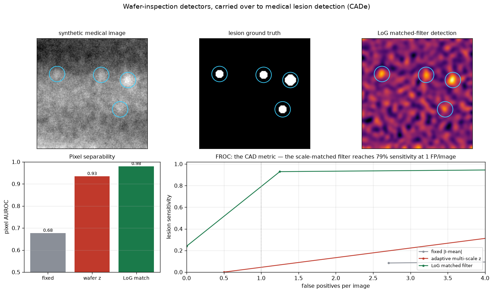

富士フイルムは今や医療(CT・内視鏡・AI画像診断 REiLI）の会社。ウェハ上の異物を見つける数学は、組織中の病変を見つける数学と同じだ——局所背景をモデル化し、各画素を「どれだけ意外か」で採点する。半導体検査で作った検出パイプラインを、正解マスク付きの合成医用画像に持ち込み、放射線科医が実際に使う指標（FROC）で評価した。そして正直な転用の結論まで示す。
合成医用画像（低周波の臓器場＋組織スペックル＋大きさ・コントラストがまちまちの病変、一部は淡い低コントラスト）に、3つの検出器を段階適用：(1)固定しきい値（素朴、AUROC0.68）、(2)半導体のダイ間差分で使った局所統計の適応z-scoreをそのまま転用（AUROC0.93）、(3)病変スケールに合わせたLaplacian-of-Gaussian 整合フィルタ（AUROC0.98）。評価はしきい値非依存の画素AUROCに加え、FROC曲線——病変感度 vs 1画像あたり誤検出数、CADの標準指標。
正直な転用の結論：半導体検出器は医用でそのまま勝たない。参照できる「健全なダイ」が無いため、局所z-scoreは組織テクスチャに誤反応し、画素AUROCは0.93と良く見えても臨床的に意味のある1誤検出/画像ではFROC感度が0.05に崩れる。医用で正しいのはスケール整合フィルタ（79%感度）。転用できるのは特定の検出器ではなく「正解付き合成→検出器比較→臨床指標で評価」という枠組みと、"無闇に流用せずスケールを合わせる"という判断力だ。この「画素AUROCは良いのにFROCで破綻」を自分で踏んで示せることこそ、医用画像研究で問われる素養。

関連（実装済み）：実写真51枚での欠陥検出 AUROC0.91・CARレジスト確率論・Mack現像。出所：fujifilm_med/lesion_cad.py。